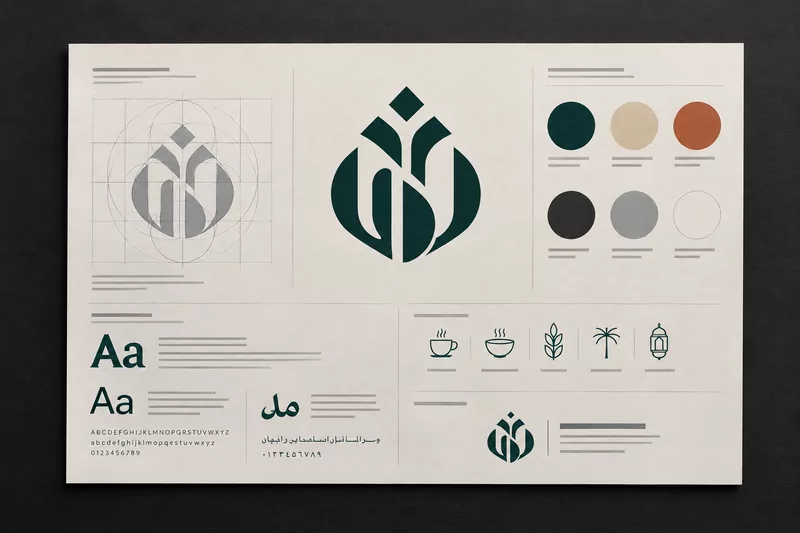
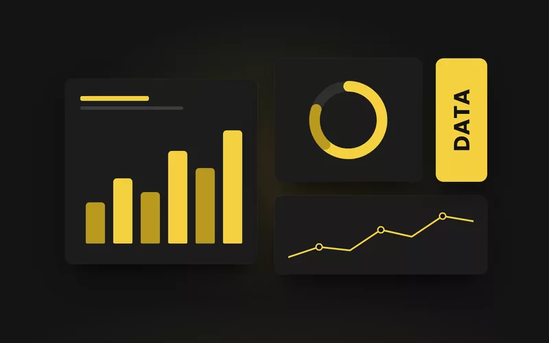
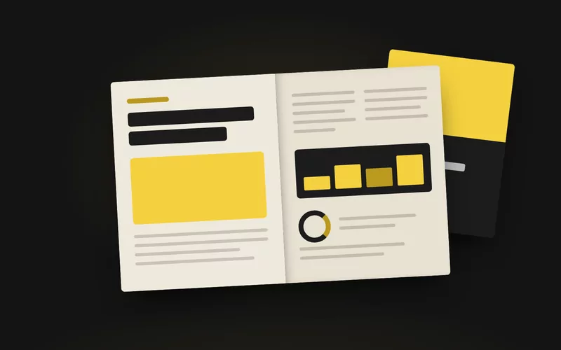

PIXORA
Digital Agency
دراسات الحالة
أعمال صُمّمت لتصمد.
وهكذا صُنعت.
Case studies — each told from the problem to what changed.
الهويةالتحريرالمعلوماتالرقمي



دراسات الحالة
Case studies — each told from the problem to what changed.
zaokalyamamah.online/work